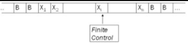
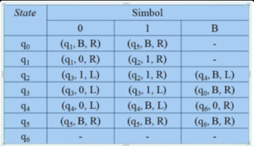
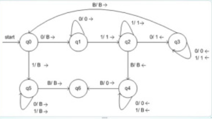

Pengertian Mesin Turing
Mesin Turing adalah Model yang sangat sederhana dari Komputer, Mesin turing itu bisa juga dibilang Sebuah Model Matematika untuk Komputasi diberikan dalam bentuk Mesin turing itu sendiri.
Mesin Turing ditemukan oleh Alan Turing.
Mesin Turing terkenal dengan ungkapan " Apapun yang bisa dilakukan oleh Mesin Turing pasti bisa dilakukan oleh komputer."
Mesin Turing menggunakan notasi seperti ID-ID pada PDA untuk menyatakan konfigurasi dari komputasinya. Stack pada PDA memiliki keterbatasan akses. Elemen yang dapat diakses hanya elemen yang ada pada top stack. Pada Mesin Turing, memori akan berupa suatu tape yang pada dasarnya merupakan array dari sel-sel penyimpanan."
Visualisasi dari sebuah mesin Turing diberikan oleh gambar berikut:

Mesin terdiri dari sebuah finite control, yang dapat berada dalam sebuah himpunan berhingga dari state. Terdapat sebuah tape yang dibagi ke dalam kotak-kotak atau sel-sel. Setiap sel dapat menampung sebuah dari sejumlah berhingga dari simbol. Pada awalnya, input yang merupakan string dari simbol dengan panjang berhingga dipilih dari input alphabet, ditempatkan pada tape. Sel-sel tape yang lain, perluasan secara infinite ke kiri dan ke kanan, pada awalnya menampung simbol khusus yang dinamakan blank. Blank bukan sebuah input symbol, dan mungkin terdapat simbol tape yang lain disamping input symbol dan blank. Terdapat sebuah tape head yang selalu ditempatkan pada salah satu dari sel-sel tape. Mesin turing dikatakan men-scan sel tersebut. Pada awalnya, tape head berada pada sel paling kiri yang menampung input. Sebuah pergerakan mesin Turing adalah sebuah fungsi dari state dari finite control dan tape symbol yang di-scan.
Spesifikasi Mesin Turing
- Mesin Turing memiliki pita berupa array sebagai memori yang dapat menyimpan sebuah simbol tunggal
- Mesin Turing juga memiliki Head fungsinya Sebagai Penunjuk Posisi yang diakses oleh Pita
- Head pada Mesin Turing juga dapat bergerak ke-kanan dan ke-kiri pada pita sesuai fungsi transisi yang ditetapkan untuk membaca inputan
- Head juga Mampu melakukan tugas untuk menghapus dan mengubah isi dari Pita
Prinsip Kerja Mesin Turing
- Lihat pada State Semula dan simbol yang ditunjuk Head
- Berdasarkan fungsi transisinya, tentukan :
1).State Berikutnya
2).Lakukan Penulisan ke pita
3).Gerakan Head kekanan dan ke-kiri
- Bila pasanan dari state dan simbol yang ditunjuk head tidak ada lagi fungsi transisinya, berarti mesin turing berhenti.
- Bila mesin turing berhenti pada state final (F), brarti input diterima. Sebaliknya jika mesin turing tidak berhenti pada state akhir/final(F), maka berarti inputan tersebut ditolak
Mesin Turing dijelaskan oleh 7-tuple:
M = (Q, S, G, d, q0, B, F)
Komponen-komponennya adalah:
- Q: Himpunan berhingga dari state dari finite control.
- S: himpunan berhingga dari simbol-simbol input.
- G: Himpunan dari tape symbol. S merupakan subset dari G.
- d: Fungsi transisi. Argumen d(q, X) adalah sebuah state q dan sebuah tape symbol X. Nilai dari d(q, X), jika nilai tersebut didefinisikan, adalah triple (p, Y, D), dimana:
- p adalah next state dalam Q
- Y adalah simbol, dalam G, ditulis dalam sel yang sedang di-scan, menggantikan simbol apapun yang ada dalam sel tersebut.
- D adalah arah, berupa L atau R, berturut-turut menyatakan left atau right, dan menyatakan arah dimana head bergerak.
- q0: start state, sebuah anggota dari Q, dimana pada saat awal finite control ditemukan.
- B: simbol blank. Simbol ini ada dalam G tapi tidak dalam S, yaitu B bukan sebuah simbol input.
- F: himpunan dari final state, subset dari Q.
Diagram Transisi untuk Mesin Turing
Diagram transisi terdiri dari sebuah himpunan dari node–node yang menyatakan state–state dari Mesin Turing .sebuah arc dari state q ke state p diberi label oleh satu atau lebih item dengan bentuk X/Y D, dimana X dan Y adalah tape symbol, dan D adalah arah, kiri (L) atau kanan (R). Bahwa bila d(q, X) = (p, Y, D) diperoleh label X/Y D pada arc dari q ke p. Dalam diagram arah D dinyatakan dengan tanda ¬ untuk “left” dan ® untuk “right”. Start state ditandai dengan kata “start” dan sebuah panah yang masuk ke dalam state tersebut. Final state ditandai dengan putaran ganda.
Contoh :
Mesin Turing berikut menghitungan fungsi , yang dinamakan monus atau proper substraction. Fungsi ini didefinisikan oleh m n = max(m – n, 0). Bahwa, m n = m – n jika m ³ n dan 0 jika m < n. Mesin Turing yang melakukan operasi ini adalah
M = ({q0, q1, … , q6}, {0, 1}, {0, 1, B}, d, q0, B)
Aturan untuk fungsi transisi d:

Diagram transisi dari mesin Turing M:

Contoh Mesin Turing Sederhana
Sebuah contoh mesin Turing dapat dibangun untuk melakukan komputasi sederhana yang didefinsikan seperti ini:
Tentukan ada berapa angka 1 dalam sebuah string berbentuk 0111...110 (rangkaian angka 1 yang didahului dengan 0 dan diakhiri juga dengan 0), apakah berjumlah genap atau berjumlah ganjil.
Jika angka 1 di antara dua angka 0 berjumlah genap, tulis sebuah angka 0 pada salah satu sel dari tape mesin Turing.
Jika angka 1 di antara dua angka 0 berjumlah ganjil, tulis sebuah angka 1 pada salah satu sel dari tape mesin Turing.
Untuk menyelesaikan masalah komputasi ini, kita buat tiga buah State bagi mesin Turing ini, yaitu Start, Even, dan Odd. Di samping itu kita buat sekumpulan aturan Transisi yang digunakan oleh
mesin Turing ini untuk melakukan proses komputasinya. Aturan-aturan Transisi tersebut dapat dituliskan demikian:
- Jika mesin Turing berada pada status Start, dan membaca simbol 0 pada Tape, lakukan hal berikut: Pindah status menjadi status Even, Ganti simbol 0 pada Tape dengan Blank (atau Hapus simbol 0 pada Tape), dan Bergerak ke kanan satu sel.
- Jika mesin Turing berada pada status Even, dan membaca simbol 1 pada Tape, lakukan hal berikut: Pindah status menjadi status Odd, Ganti simbol 1 pada Tape dengan Blank, dan Bergerak ke kanan satu sel.
- Jika mesin Turing berada pada status Odd, dan membaca simbol 1 pada Tape, lakukan hal berikut: Pindah status menjadi Even, Ganti simbol 1 pada Tape dengan Blank, dan Bergerak ke kanan satu sel.
- Jika mesin Turing berada pada status Even, dan membaca simbol 0 pada Tape, lakukan hal berikut: Pindah status menjadi Halt, Ganti simbol 0 pada Tape dengan 0, dan tetap pada sel tersebut (tidak perlu berpindah ke kiri maupun ke kanan).
- Jika mesin Turing berada pada status Odd, dan membaca simbol 0 pada Tape, lakukan hal berikut: Pindah status menjadi Halt, Ganti simbol 0 pada Tape dengan 1, dan tetap pada sel tersebut.